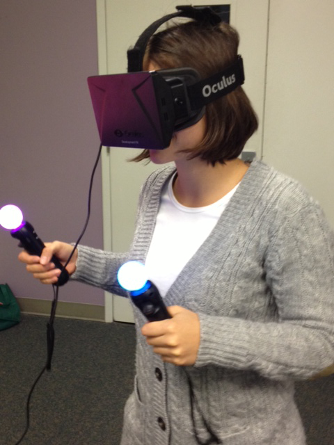

My Story

I am currently a master student at Carnegie Mellon University pursuing a Master of Entertainment Technology at the Entertainment Technology Center (ETC). I am passionate about developing new ways of entertainment with the use of new technology to promote learning. I believe interactive storytelling and interactive installations can provide a huge impact on people worldwide by showing them different perspectives of things.
At ETC I am specializing on game design techniques to successfully impact people by maintaining them interested and involved when exposed to new technologies. I want to make sure that every interactive installation I make; people learn something from it and remember it for as long as possible. To promote learning with new technologies is what keeps me going. Knowing that my work is not just for someone to enjoy but to make them grow as humans is what makes me develop these types of experiences. This is why I want to be part of industries that have similar views and interests as me!
"I like nonsense, it wakes up the brain cells. Fantasy is a necessary ingredient in living."
Dr. Seuss
More Info
:)
In 2008 I left Colombia to start my path in computer science and electronic media to develop the right tools to express myself. Finishing my college career as a dual-degree at Rensselaer Polytechnic Institute (Troy, NY) in computer science and electronic media has made me not only a strong programmer but a great dreamer. During my college carrier I experimented with different techniques, whilst searching for my own. I started with 3D art and video editing but never developed a true passion for it. I was more interested in knowing how those tools were made than using them. During my third year of school I finally found what I was looking for, computer graphics. My first computer graphics class was an introduction to OpenGL. I enjoyed the context so much that I wanted to know more. I went further in graphics by taking an advanced computer graphics class. This class showed me the power and complexity of computer graphics. From basic problems, like ray tracing, to extremely complex data structures and algorithms, like participating media and fluid simulations; everything fascinated me. During this class I improved my developing and problem solving skills with every line of code I wrote. This field is a never-ending challenge, in which the harder the problem the more beautiful the reward. It is in this field that makes my inner artist come to life!
Once enlightened by the power of computer graphics I knew I was ready to develop two of my main interests, my first learning game and my first smoke simulation. Education is critical in today’s society, mostly in developing countries, and discovering an efficient way to promote it is needed to create equal opportunities worldwide. After five months of research and field studies I realize that technology is currently being used in an old fashion way, by delivering information to the user. I decided to use technology in a different way by allowing the user to be the creator of his own learning experience; this by exploring the environment and the technology provided.
I created FusionSkyGames as a result of this research project with its first learning game Number Mission. Number Mission is an interactive learning math game with a green theme that encourages recycling and awareness of environmental issues. It targets 7 to 12 year olds in developing countries and economically challenged areas and promotes learning with the help of the Xbox Kinect. The developing process of Number Mission was a great learning experience. Every two weeks I worked with children for two hours. We would test the game and discourse ways of improving it by applying the kid’s solutions and observations. We were all working as a team to make the game a learning machine.
I faced two main problems during the development of the game. When the game was tested in Colombian, kids didn’t like the idea of having a Kinect game in a 3D environment. Many were too overwhelmed by the power of the Kinect to be thinking of controlling a 3D avatar with their bodies. To overcome this problem I had to redesign and make it 2D. Thanks to this experience I realized how important field testing is at the beginning stages of educational research and how important it is to keep doing it throughout the entire project development.
The second issue was gesture recognition. Children like to do crazy things while playing video games and I wanted the kids to have as much liberty as possible while playing the game. Gesture recognition is a hard problem. I wrote some C++ classes to make the old OpenNI drivers and SDK work smoother in the skeleton tracker and gesture recognition. Even though the game works fine, I know there is a lot of work to be done in such field, and I want to be a part of it. Number Mission was chosen to represent RPI at RPI's 2012 GameFest competition. After seeing all the children’s faces full of happiness while playing my game I realized how remarkable it is to impact those you care about and how much I wanted to keep doing it.
With the development of Number Mission, my interest of interactive simulations spiked. I started developing experimental simulations with the Xbox Kinect and OpenFrameworks as a way to express myself and my desire to promote learning. Today, I not only use the Kinect as a mean of interaction but other types of inputs such as sound, projectors, lights and electronics like Arduino`s.
The development of such simulations got me interested in researching participating media. An interactive simulation with participating media, such as smoke, would be very interesting and a complete learning experience for the user. One of my goals is to create an interactive simulation with smoke. This put me in a path of understanding the complexity of smoke by researching topics like extinction and absorption coefficients to single and multiple scattering. I developed my first smoke rendering which was done in OpenGL using photon mapping and an octree data structure for optimization. I recognize the importance and benefits of continuing to grow in this field, and I plan to continue researching participating media, as a way to feed my interactive installations palette.
I was born and raised in Colombia, a country with exceptional potential that has struggled for many decades to overcome an internal conflict that has led to overwhelming violence, poverty and insecurity. I was six years old when I was introduced to a computer by my father, as a mean of distraction from the outside world. Treasure MathStorm, my first computer game, was the only thing I knew how to use in a computer; nonetheless the machine always intrigued me, and I would spend hours playing with what I had. Today, I still have countless memories of the game and the thoughts it gave way to.
Since I was 10 years old I began traveling the world with my parents. They wanted my siblings and I to gather experiences that would help us understand the world we live in. Understand the differences between a developing and developed country, and the different cultures that arise in every corner of the word. After two years of traveling and living in the violence of Colombia; I developed the desire to help and impact those in need. My mother, being an artist, advised me to express myself in paintings, and I tried it until my dad brought home a Nintendo 64. My life changed 180 degrees. I was blown away by the power of such machine. Once exposed to this change in technology, I started to feel limited by my brush and my canvas. I wanted to use technology to express myself. I remember asking my father to tell me something new about technology every day. His answers were always dreams in children’s books. I was flattered. It wasn’t until 8th grade, when introduced to web development, that I realized what his answers really meant. I became fascinated with the idea of programming and started reading about languages like C and JavaScript. Since then, I knew programming was going to be my brush and my mind the canvas.